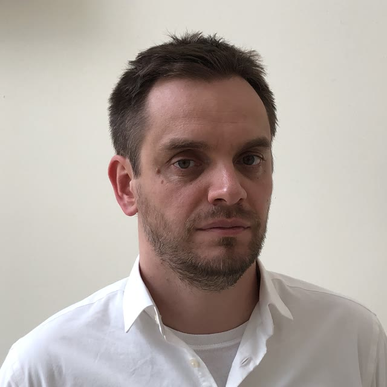

Dmytro Vitel
Postdoctoral Researcher · Computer Science, University of South Florida
About
I am a postdoctoral researcher in computer science at the University of South Florida in Tampa, working with Dr. Anshuman Chhabra on language model behaviour and interpretability. I completed my Ph.D. at USF in 2026 under Dr. Alessio Gaspar in the CEREAL Lab, where my dissertation studied how latent structure in semantic spaces can be extracted and exploited for efficient symbolic search and black-box optimization.
My work sits between two questions: how learning systems search structured spaces without converging prematurely, and how we can attribute what a large language model does back to its data and its internals. On the first, I study symbolic search, semantic genetic programming and interaction-aware optimization, where modeling the latent interaction structure of a high-dimensional search space improves convergence. On the second, I work on training-data influence estimation and on the failure modes of language models as agents. I see these as one problem: symbolic search over reasoning chains and decision trees is what an agent does, and reliable decision-making in sequential, interactive environments is where I want to take it.
Research interests
- Language modeling, model interpretability and training-data influence
- Agentic systems and world modeling
- Symbolic search, semantic genetic programming and evolutionary computation
- Coevolution and latent-structure extraction from sparse interactions
Selected publications
- First is Not Really Better Than Last: Evaluating Layer Choice and Aggregation Strategies in Language Model Data Influence Estimation International Conference on Learning Representations (ICLR), 2026
- Coordinate System Extraction as the Search Driver in Test-Based Genetic Programming Genetic and Evolutionary Computation Conference (GECCO), ACM, 2025
- Robust Search for the Underlying Objectives in Black-Box Games with Binary Outcomes Applications of Evolutionary Computation (EvoApplications, EvoStar), 2025
Full list on Google Scholar and in the CV.
Education
- Ph.D. in Computer Science, University of South Florida, 2026
- Dissertation: Extracting and Exploiting Latent Structures in Semantic Spaces for Efficient Symbolic Search and Black-Box Optimization. Advisor: Alessio Gaspar.
- M.S. in Computer Science, University of South Florida, 2019
- Thesis: On Automation of Code Transformations for Concept Inventory Misconceptions. Advisor: Alessio Gaspar.
- M.S. in Applied Physics, Taras Shevchenko National University of Kyiv, 2015
- Thesis: Parallel Routing Algorithms on Graphs for Heterogeneous Architectures. Advisor: S. D. Pogorilyy.
Contact
viteldmitry@gmail.com · Tampa, FL, USA